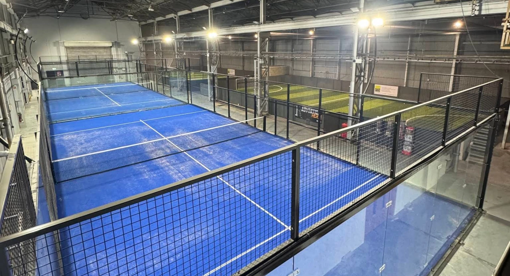
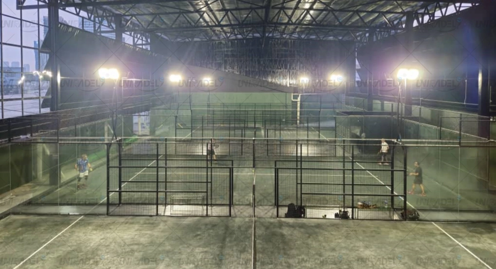
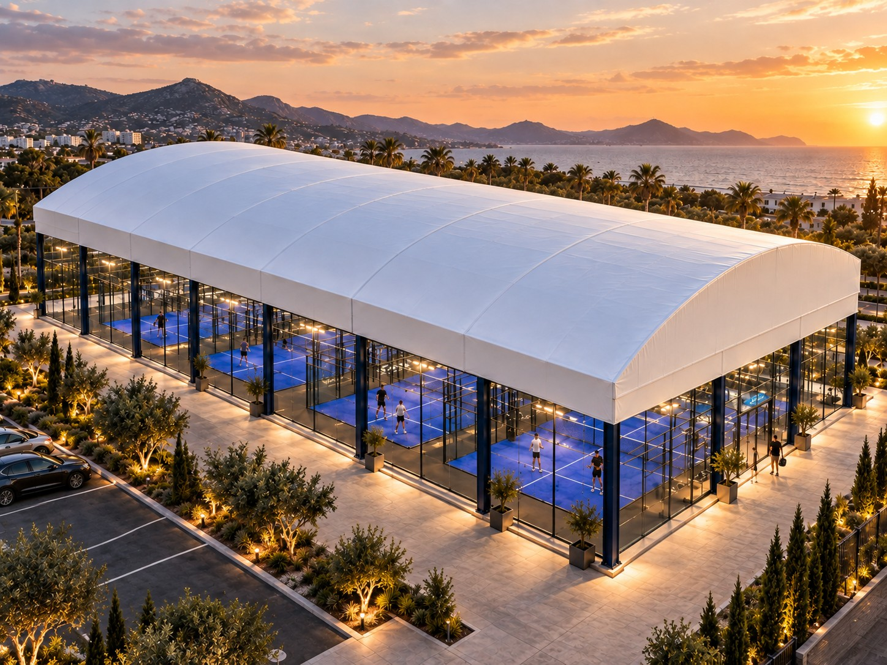

Commercial Padel Club
- Objective
- Bookings, memberships, coaching and events.
- Planning focus
- Scheduling capacity, player flow and social areas.
- Court consideration
- Quantity and mix must support the operating plan.
Building a commercial padel club involves much more than purchasing courts. Site size, court quantity, foundation, drainage, roof strategy, local engineering, logistics and installation should be evaluated as one coordinated project.

A commercial padel club normally starts with five decisions: market demand, site suitability, number of courts, total project budget and court specification. Once the site is confirmed, investors should evaluate layout, foundation, drainage, lighting, weather protection, logistics and installation before ordering equipment. A successful project should therefore be planned as a complete facility rather than simply as a court purchase.
Before selecting a padel court model, define how the venue will operate. A hotel, small commercial club, multi-court destination and sports center have different requirements for court quantity, circulation, changing facilities, spectator areas and weather protection. The business model should establish the planning brief.
Court quantity should follow demand, operating format, available space and capital—not a generic profitability rule. One or two courts can work as an amenity; three or four improve scheduling flexibility for a smaller commercial club; larger destinations can support more programming, provided the market and operating plan justify the capacity.
Suitable for resorts, schools, residential or mixed-use amenities and supplementary sports facilities.
Main limitation: Lower flexibility for commercial scheduling and events.
Suitable for coaching, memberships, social play and small events.
Planning advantage: Better operating flexibility than a single-court venue.
Suitable for leagues, tournaments, coaching programs, corporate events and larger commercial operations.
Planning test: Validate demand and operational capacity before committing.
A padel club needs more than the 20 × 10 m playing area for each court. Allow for the enclosure, court-to-court clearance, safe player access, walkways, reception, changing rooms, social space, storage, building services and any required parking or emergency access. Build a coordinated site layout before confirming the lease or land.
The regulation play area is the starting point, not the complete facility footprint.
Indoor clubs gain weather protection but depend on adequate clear height, building structure, ventilation, acoustics and compliant access. Outdoor clubs need drainage, corrosion protection, wind review, foundations and a weather strategy. The best format is the one that fits the local climate, site, lease and operating model.
For coastal or high-wind projects, court selection and foundation design should be reviewed together. Explore FORCE-HX High-Wind Court →
A padel club budget should include the complete path from site preparation to opening, not only the court purchase price. Separate equipment, foundations, logistics, installation and local works so every cost has a defined owner. Add the club fit-out and professional requirements that sit outside the court supplier’s scope.
Separate public market planning ranges from a project-specific SPORTENVO quotation.
Select the court after the venue type, climate, foundation approach and visual priorities are understood. A standard commercial club, premium indoor venue, leased site and exposed coastal project do not have the same structural or operational brief. Match the system to verified project conditions.
Best for: Commercial clubs, resorts and standard outdoor projects.
Key decision: Balanced commercial specification and panoramic visibility.
Explore Panoramic →
Best for: Premium venues and high-visibility indoor clubs.
Key decision: Greater visual openness and architectural appearance.
Explore Super Panoramic →
Best for: Leased sites, temporary developments and reduced permanent civil works.
Key decision: Foundation strategy and relocation requirements.
Explore Mobile / Modular →
Best for: Coastal and demanding high-wind project environments.
Key decision: Structural loads, foundation and local engineering.
Explore FORCE-HX →The court, foundation and drainage must work as one system. Confirm ground conditions, levels, anchoring and local structural requirements before production. A concrete solution suits many permanent facilities, while a modular steel system can help selected leased or relocatable projects. Neither option is automatically the lowest-cost choice.
Suitable where a permanent facility and suitable engineered slab can be created.
Suitable where reduced civil work, a leased site or future relocation is important.
Compare the complete installed site solution, schedule, lease conditions and lifecycle requirements.

A roof affects more than weather protection. Its columns, structural loads, foundations, drainage, lighting, access and construction sequence can change the site layout and court installation plan. Decide the roof strategy before foundations and utilities are finalized, then coordinate the roof, court and local engineering teams.
Compare suppliers with one normalized technical and commercial schedule. Record the exact steel, protection, glass, turf and lighting specifications, then align foundation, packing, freight, installation, warranty and engineering responsibilities. This reveals whether a price difference comes from value, scope or an exclusion.
How to Evaluate a Padel Court Manufacturer →
| Requirement | What to verify | Why it matters |
|---|---|---|
| Steel structure | Sections, wall thickness, grade and connections | Defines the supplied structural system |
| Galvanizing / corrosion protection | Process, coating sequence and project environment | Important for durability and exposed sites |
| 12 mm tempered glass | Thickness, processing, quantity and documentation | Ensures quotations use the same glass scope |
| Artificial turf | System, pile, backing, infill and quantity | Affects play and replacement planning |
| Lighting | Fixture output, IP rating, quantity and controls | Changes equipment and electrical scope |
| Foundation scope | Supplier information versus local engineering and works | Prevents an equipment price becoming a site budget |
| Technical drawings | Foundation, assembly and interface documentation | Supports local coordination and installation |
| Packing | Export method, glass protection and packing list | Reduces logistics ambiguity |
| Shipping | Incoterm, port, inland delivery and customs exclusions | Clarifies transfer of cost and responsibility |
| Installation guidance | Manuals, remote support, supervision and local tools | Defines who completes the work |
| Warranty | Coverage, term, exclusions and claim process | Allows like-for-like commercial comparison |
| Engineering responsibility | Supplier scope, local engineer scope and design criteria | Critical for approvals and project interfaces |
Do not compare padel court suppliers by headline price alone. Compare the specification, inclusions, exclusions and engineering scope line by line.
A commercial padel project moves through linked decisions rather than isolated purchases. Market and site review establish the brief; layout and system selection define the technical direction; foundations and roofs coordinate local work; manufacturing, shipping, preparation and installation then follow the confirmed scope.
Most planning errors occur when one decision is made before its dependencies are known. A court can only be specified correctly when the site, foundation, climate, access, roof and local compliance path are understood. Use these seven checks before placing an order.
The site determines access, climate, foundation, clearances and installation constraints. Confirm suitability first.
Foundations, freight, installation, utilities, permits and club fit-out can materially change the investment.
Water management, flatness, anchors and bearing conditions must be resolved in the civil design.
Players, spectators, maintenance teams and emergency access require more than the playing footprint.
Roof loads, columns, drainage and sequencing can change the foundation and overall layout.
Normalize the steel, glass, turf, lighting, freight and installation scope before comparing price.
Local engineering, planning and compliance responsibilities should be clear before technical confirmation.
Every project combines a different country, city, court quantity, indoor or outdoor setting, site dimension, ground condition, climate, foundation, roof, logistics route and local code environment. SPORTENVO uses these inputs to define the first technical and commercial scope rather than assuming one standard package fits every venue.

SPORTENVO supplied the court system and technical guidance for this commercial rooftop club project. Planning had to coordinate the existing building interface, access for court components, rooftop drainage, wind exposure and the site-specific installation sequence.
View Kuala Lumpur Project →
SPORTENVO supplied the court system and coordinated technical guidance with the local installation team for this indoor venue. The available hall footprint, clear-height structure, multi-court layout, spectator circulation and adjacent social area shaped how the venue was integrated.
View Moldova Project →Prepare these details before requesting a commercial padel proposal. Complete information helps the supplier separate the court system, foundation, roof, logistics and installation responsibilities and identify which local engineering or site inputs are still required.
5 details are enough to start: Country · Venue Type · Number of Courts · Site Dimensions · Foundation / Roof Requirement
These answers cover the first decisions most commercial buyers face. They provide a planning framework, while final recommendations still depend on the actual site, climate, court quantity, foundation, roof and local requirements.
The total depends on the number of courts, existing site, foundation, drainage, freight, installation, roof and club fit-out. Court equipment is only one part of the investment. Use the SPORTENVO padel court cost guide for public planning ranges, then obtain project-specific court and local construction quotations.
There is no universal minimum that guarantees commercial success. One or two courts can support resorts and complementary facilities; three or four improve scheduling flexibility for coaching and social play; larger venues can support more programs and events. Demand, site capacity and the operating model should determine quantity.
A regulation playing area is 20 × 10 m, but a commercial site needs more space for court structure, clearance, access, walkways, reception, changing facilities, social areas, storage and emergency routes. Indoor projects also need suitable clear height. Confirm a complete layout before signing a site.
Neither format is universally better. Indoor clubs offer weather-protected operation but depend on building height, structure, ventilation, acoustics and fire access. Outdoor clubs require drainage, corrosion protection, wind review and possibly a roof. The local market, climate, site and lease should guide the decision.
A fixed commercial court normally needs an engineered, level and well-drained base, often a concrete slab or ring-beam solution. The precise foundation depends on ground conditions, anchoring and local structural requirements. Some selected projects may use an engineered modular steel foundation instead.
Yes, selected sites can use a modular steel foundation where reduced permanent civil work, leased land or future relocation is important. It still requires suitable ground, drainage, leveling and engineering review. A modular foundation is not automatically cheaper than a conventional concrete solution.
The roof strategy should be confirmed before foundations and court installation are finalized. Roof columns, loads, drainage, access and lighting can affect the site layout and foundation design. The construction sequence is project-specific, so the court supplier, roof supplier and local engineer should coordinate it early.
There is no reliable universal duration. Site approvals, engineering, foundation and roof work, manufacturing, shipping, customs and installation each follow different schedules. Build a coordinated program only after the site, court quantity, technical scope and local approvals are defined; allow contingency for dependencies outside equipment production.
Start with the country and city, venue type, indoor or outdoor application, number of courts, site dimensions, ground condition, preferred court model, foundation and roof requirements, destination port and target schedule. Site drawings and photos improve the supplier’s ability to define scope and exclusions.
Compare steel sections, corrosion protection, 12 mm tempered glass, turf, lighting, foundation scope, drawings, packing, freight, installation guidance, warranty and engineering responsibility line by line. A lower headline price may reflect different specifications or exclusions, so normalize every quotation before making a decision.
Potentially, yes, but a multi-court roof must be engineered as a separate project system. Span, columns, wind or snow loads, drainage, foundation reactions, lighting, ventilation and installation access all require review. Do not assume that multiplying a single-court cover produces an appropriate multi-court solution.
Confirm market and venue strategy, site control, court quantity, layout, access, foundation, drainage, indoor clear height or outdoor climate, roof strategy, local engineering, permits, logistics and installation responsibilities. Ordering before these items are understood increases the risk of redesign, delays and unplanned local costs.
Share the country, venue type, number of courts, site dimensions and foundation or roof requirements. SPORTENVO can use these details to structure the first project proposal.
Country · Venue Type · Number of Courts · Site Dimensions · Foundation / Roof Requirement